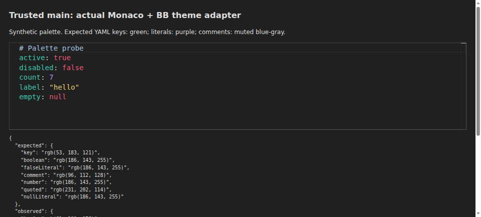

#6765 · Monaco token scope and alpha adaptation
Trusted origin/main: 916d684ac23d0b0de82c09cfc7553a50287d2188
Verdict: REPRODUCED · Root-cause confidence: high · Reproduction label: confirmed-repro
1. TL;DR
YAML keys and unquoted literals do not receive a custom TextMate palette’s intended colors in BB’s File Editor. Translucent comments render fully opaque instead of blending onto the editor surface. The adapter forwards TextMate scope names to Monaco’s different token vocabulary and preserves token alpha that Monaco discards. Two clean trusted-main checkouts reproduced these mechanisms in real Chromium using BB’s actual staged Monaco bundle and unmodified theme adapter. Numeric and quoted-string controls rendered correctly in both runs.
This is a source-rendering reproduction with an original synthetic palette, not a replay of the reporter’s private/custom palette, macOS installation, or full BB server.
2. Claims vs findings
| Claim | Finding | Evidence |
|---|---|---|
| YAML keys miss TextMate YAML-specific colors | Verified | The real tokenizer emits type.yaml; the adapter leaves the supplied entity.name.tag.yaml untouched. Keys render inherited teal rather than synthetic green. |
| Unquoted boolean/null literals miss constant colors | Verified | true, false, and null tokenize as keyword.yaml and use generic keyword pink instead of constant purple. |
| Comment alpha is lost | Verified | #a0c0e080 is forwarded unchanged, but the rendered span is opaque rgb(160, 192, 224). |
| Numbers and quoted strings still color correctly | Verified | Both controls match their palette colors after asynchronous tokenization completes. |
| The reporter’s exact named theme and RGB triplets | Not separately tested | No external theme links or user runtime data were fetched. This report proves the same defects with different, original inputs. |
| A linked fix repairs the issue | Static assessment only | PR #6764 is open and linked in GitHub metadata. Its code and tests were not executed. |
3. Environment
- Repository: public
get-bb/bb; trusted main commit above; both checkouts detached at that exact commit, with no tracked source edits. - Build host: Linux 4.19.0-gvisor x86_64; Node v22.19.0; pnpm 9.15.0; locked Monaco 0.56.0.
- Browser: enrolled-host headless Chromium through BB Browser Automation. Actual user-agent is listed in Verification.
- Isolated static fixture roots:
site-base/on port 18675 and independently builtsite-verify/on port 18676. No application database, user profile, live BB instance, providers, or credentials were involved. - The first full build hit an unrelated SDK runtime-output ordering failure. Retrying in the first checkout succeeded: 72/72 Turbo tasks. The second checkout hit that setup problem twice; explicitly building the trusted SDK then let its focused plugin checks pass. No repository build code was repaired.
- Existing File Editor suite: 53 tests across five files pass in each checkout. These tests do not catch the browser-rendered mismatch.
4. Minimal reproduction
- Check out the trusted commit and perform a frozen install. Run the plugin’s tests through Turbo, then its existing asset staging script as an intentional investigation bypass:
pnpm install --frozen-lockfile --prefer-offline pnpm exec turbo run test --filter=bb-plugin-monaco-editor node plugins/monaco-editor/scripts/stage-assets.mjs
- Copy the five original inline fixture scripts into one directory. Build the adapter directly from that checkout and copy its staged assets:
node "$REPRO/prepare.mjs" "$CHECKOUT" "$SITE" node "$REPRO/serve.mjs" "$SITE" 18675
- Open
http://127.0.0.1:18675in the plugin-controlled browser. Runbrowser-check.jsafter navigation; it waits for all five literal/control spans before reading computed colors. commands.txt (inline) contains exact setup and browser commands, plus the second-checkout procedure.
| Rendered value | Expected | Observed | Check |
|---|---|---|---|
| key | rgb(53, 183, 121) | rgb(61, 201, 176) | FAIL |
| boolean | rgb(186, 143, 255) | rgb(238, 85, 119) | FAIL |
| falseLiteral | rgb(186, 143, 255) | rgb(238, 85, 119) | FAIL |
| comment | rgb(96, 112, 128) | rgb(160, 192, 224) | FAIL |
| number | rgb(186, 143, 255) | rgb(186, 143, 255) | PASS (control) |
| quoted | rgb(231, 202, 114) | rgb(231, 202, 114) | PASS (control) |
| nullLiteral | rgb(186, 143, 255) | rgb(238, 85, 119) | FAIL |
Expected: exitCode 0; all seven palette comparisons pass. Actual in both clean checkouts: exitCode 1; five palette comparisons fail. Error: Palette regression: key, boolean, falseLiteral, comment, nullLiteral
The comment expectation is computed independently: round(channel × 128/255 + 32 × 127/255), giving #607080 on #202020. The fixture’s numeric color is deliberately specified using Monaco’s number token too, keeping that control independent of unrelated TextMate numeric-scope support.

The table and assertion result record both runs. Raw evidence is retained locally, not published, in accordance with this report repository’s policy.
Original reproduction files: prepare.mjs (inline) · serve.mjs (inline) · fixture.html (inline) · fixture.js (inline) · browser-check.js (inline).
prepare.mjs
import { createRequire } from "node:module";
import { cp, mkdir } from "node:fs/promises";
import path from "node:path";
const checkout = path.resolve(process.argv[2]);
const site = path.resolve(process.argv[3]);
const plugin = path.join(checkout, "plugins/monaco-editor");
const require = createRequire(path.join(plugin, "package.json"));
const esbuild = require("esbuild");
await mkdir(site, { recursive: true });
await cp(path.join(plugin, "dist/monaco"), path.join(site, "monaco"), { recursive: true });
await esbuild.build({
entryPoints: [path.join(plugin, "lib/monaco-theme.ts")],
outfile: path.join(site, "adapter.js"),
format: "esm",
platform: "browser",
bundle: true,
});
for (const name of ["fixture.html", "fixture.js"]) {
await cp(path.join(import.meta.dirname, name), path.join(site, name));
}
console.log("Prepared fixture from trusted checkout");
serve.mjs
import { createServer } from "node:http";
import { readFile } from "node:fs/promises";
import path from "node:path";
const root = path.resolve(process.argv[2]);
const port = Number(process.argv[3]);
const mime = { ".html": "text/html", ".js": "text/javascript", ".css": "text/css" };
createServer(async (request, response) => {
const requested = new URL(request.url, "http://localhost").pathname;
const destination = path.resolve(root, `.${requested === "/" ? "/fixture.html" : requested}`);
if (!destination.startsWith(`${root}/`)) {
response.writeHead(403).end();
return;
}
try {
const content = await readFile(destination);
response.writeHead(200, { "content-type": mime[path.extname(destination)] ?? "application/octet-stream" });
response.end(content);
} catch {
response.writeHead(404).end();
}
}).listen(port, "0.0.0.0", () => console.log(`Palette fixture listening on ${port}`));
fixture.html
<!doctype html>
<html lang="en">
<meta charset="utf-8">
<meta name="viewport" content="width=device-width, initial-scale=1">
<title>Issue 6765 — trusted main palette probe</title>
<link rel="stylesheet" href="/monaco/editor.css">
<style>
body { background: #202020; color: #ddd; font: 16px/1.5 system-ui; margin: 24px; }
h1 { font-size: 22px; }
#editor { height: 230px; border: 1px solid #666; }
pre { font-size: 13px; white-space: pre-wrap; overflow-wrap: anywhere; }
</style>
<h1>Trusted main: actual Monaco + BB theme adapter</h1>
<p>Synthetic palette. Expected YAML keys: green; literals: purple; comments: muted blue-gray.</p>
<div id="editor"></div>
<pre id="result">Rendering palette probe…</pre>
<script type="module" src="/fixture.js"></script>
</html>
fixture.js
import { monaco } from "/monaco/editor.js";
import { toMonacoTheme } from "/adapter.js";
globalThis.MonacoEnvironment = {
getWorker: () => new Worker("/monaco/editor.worker.js", { type: "module" }),
};
const palette = {
name: "slopcop-palette-probe",
type: "dark",
bg: "#202020",
fg: "#dddddd",
colors: {},
tokenColors: [
{ scope: "entity.name.tag.yaml", settings: { foreground: "#35b779" } },
{ scope: "constant.language", settings: { foreground: "#ba8fff" } },
{ scope: "constant.numeric", settings: { foreground: "#ba8fff" } },
{ scope: "number", settings: { foreground: "#ba8fff" } },
{ scope: "keyword", settings: { foreground: "#ee5577" } },
{ scope: "string", settings: { foreground: "#e7ca72" } },
{ scope: "comment", settings: { foreground: "#a0c0e080" } },
],
};
const source = [
"# Palette probe",
"active: true",
"disabled: false",
"count: 7",
'label: "hello"',
"empty: null",
].join("\n");
const converted = toMonacoTheme(palette);
monaco.editor.defineTheme("palette-probe", converted);
const editor = monaco.editor.create(document.querySelector("#editor"), {
value: source,
language: "yaml",
theme: "palette-probe",
automaticLayout: true,
minimap: { enabled: false },
readOnly: true,
fontSize: 19,
lineNumbers: "off",
scrollBeyondLastLine: false,
});
window.collectEvidence = () => {
const lines = [...document.querySelectorAll(".view-line")].map((line) =>
[...line.querySelectorAll("span")]
.filter((span) => span.childElementCount === 0 && span.textContent.trim())
.map((span) => ({
text: span.textContent.replaceAll("\u00a0", " "),
color: getComputedStyle(span).color,
})),
);
const observed = {
key: lines[1]?.[0]?.color,
boolean: lines[1]?.find((span) => span.text.trim() === "true")?.color,
falseLiteral: lines[2]?.find((span) => span.text.trim() === "false")?.color,
comment: lines[0]?.[0]?.color,
number: lines[3]?.find((span) => span.text.trim() === "7")?.color,
quoted: lines[4]?.find((span) => span.text.includes("hello"))?.color,
nullLiteral: lines[5]?.find((span) => span.text.trim() === "null")?.color,
};
const expected = {
key: "rgb(53, 183, 121)",
boolean: "rgb(186, 143, 255)",
falseLiteral: "rgb(186, 143, 255)",
comment: "rgb(96, 112, 128)",
number: "rgb(186, 143, 255)",
quoted: "rgb(231, 202, 114)",
nullLiteral: "rgb(186, 143, 255)",
};
const failures = Object.keys(expected).filter(
(key) => observed[key] !== expected[key],
);
const result = {
viewport: { width: innerWidth, height: innerHeight },
palette,
converted,
tokens: monaco.editor.tokenize(source, "yaml"),
expected,
observed,
failures,
lines,
};
document.querySelector("#result").textContent = JSON.stringify(
{ expected, observed, failures },
null,
2,
);
return result;
};
window.probeEditor = editor;
browser-check.js
const page = await browser.getPage("main");
await page.waitForFunction(() => {
const text = new Set(
[...document.querySelectorAll(".view-line span")].map((span) => span.textContent.trim()),
);
return ["true", "false", "7", '"hello"', "null"].every((token) => text.has(token));
});
const evidence = await page.evaluate(() => window.collectEvidence());
console.log(JSON.stringify({ expected: evidence.expected, observed: evidence.observed, failures: evidence.failures }, null, 2));
if (evidence.observed.number !== evidence.expected.number || evidence.observed.quoted !== evidence.expected.quoted) {
throw new Error("Control tokens are not rendered; do not classify this run");
}
if (evidence.failures.length > 0) {
throw new Error(`Palette regression: ${evidence.failures.join(", ")}`);
}
5. Root cause
TextMate and Monarch use different token contracts
tokenRules, lines 42–59 splits and trims incoming scope names but emits them directly as Monaco token selectors:
const token = scope.trim();
rules.push({ token, ... });
Monaco’s installed YAML grammar adds .yaml to tokens, calls mapping keys type, and routes its boolean/null keyword list to keyword. Therefore entity.name.tag.yaml cannot match type.yaml, and constant.language cannot match keyword.yaml. Because toMonacoTheme sets inherit: true, keys retain the built-in type teal and literals inherit a generic keyword rule. Actual token arrays and converted selectors were checked in both runs; the original fixture prints them when collected.
Monaco accepts token alpha syntax but drops its alpha
tokenColor, lines 12–22 expands short hex but returns validated eight-digit strings unchanged. tokenRules, lines 31–33 passes those colors directly into token rules. Installed Monaco’s ColorMap.getId matches optional alpha, then keeps only the six-digit capture:
const colorRegExp = /^#?([0-9A-Fa-f]{6})([0-9A-Fa-f]{2})?$/;
const match = color.match(colorRegExp);
color = match[1].toUpperCase();
this._id2color[value] = Color.fromHex('#' + color);
This is not a missing or malformed palette color. The adapter loses semantic information at the consumer boundary: token vocabulary needs translation, and token alpha needs compositing into a six-digit color. Workbench UI colors have a different contract and must keep supported alpha.
Dependency excerpts: dependency excerpt (inline) and dependency excerpt (inline). Trusted BB entry points: the staged real Monaco entry; File Editor loads and applies the adapter before creating Monaco; theme updates use the same adapter; defineMonacoTheme forwards the converted theme.
6. Proposed fix
Add narrowly scoped TextMate-to-Monarch aliases for YAML keys and constant literals, while preserving explicit Monarch selectors and generic keyword styles for other languages. Composite translucent token colors over the resolved editor background before emitting Monaco token rules; keep workbench alpha unchanged. Tests should guard explicit-selector precedence, editor-background overrides, shorthand hex, fully transparent/opaque values, and unaffected controls. A browser-level comparison such as the supplied fixture is necessary to detect consumer behavior that a converter-output assertion alone can miss.
No fix branch, commit, push, or additional pull request was created: open PR #6764 already links this issue. The rule’s duplicate-PR gate stops the fix phase before its simple-fix eligibility checks.
7. Linked PR — static review only
#6764: relevant to both verified causes
GitHub metadata shows an open PR against main, linked to this issue, touching the adapter and its tests only. Its untrusted diff adds YAML aliases, puts generated aliases before explicit selectors, and composites token alpha over the effective editor background. These changes target both verified mechanisms rather than only changing one palette. Its tests add alpha/background cases and YAML-specific selector precedence cases.
Static finding: no obvious mismatch with these two mechanisms was identified. This is not a correctness or merge approval: the PR branch, scripts, and tests were never checked out or run, and edge-case behavior is unverified. All executed production code came from trusted main. Suggested follow-up: run the original browser fixture against the eventual trusted-main fix and require zero failures.
8. Related issues
The target repository’s open and closed issue searches for Monaco/theme problems returned no other direct matching issue during this run. Broader theme customization requests are not evidence for this adapter defect. No other issue was changed.
9. Verification — second clean checkout, same agent
A second separate clone, verify/, was detached at the same trusted main commit, installed with the frozen lockfile, built with its own SDK and staged Monaco assets, and rendered from a new site-verify/ root and port 18676. No tracked production files were edited in either checkout. The same agent performed both checks; this is not an independent-agent verification.
pnpm install --frozen-lockfile --prefer-offline pnpm exec turbo run build --filter=@get-bb/plugin-sdk --force pnpm exec turbo run test --filter=bb-plugin-monaco-editor node plugins/monaco-editor/scripts/stage-assets.mjs node "$REPRO/prepare.mjs" "$VERIFY_CHECKOUT" "$VERIFY_SITE" node "$REPRO/serve.mjs" "$VERIFY_SITE" 18676 Then navigate a fresh controlled page to :18676 and run browser-check.js there.
The comparison check confirmed equal observed RGB values and equal five-element failure lists; both control checks pass in both checkouts. Independently generated adapter, editor JS, editor CSS, and worker SHA-256 hashes match:
{
"adapter.js": "48587159d01c09bc603f72fb3cbac3c3b3a832b4e86bcbd21d2a13e9895c1304",
"monaco/editor.js": "84ad7b6c7fd9700cb89aa29aebc50e0ee626186b3361ace5a14a82656c9571ff",
"monaco/editor.css": "47cdd85a33b3c4e0623f7ed9dea2207d6067e153049e205576eaca4f952804d5",
"monaco/editor.worker.js": "c668fb3979cd6fa71d0e3070454f4dd480fe429ad8dc07fc8820078883cebcea"
}
Both plugin suite runs finish with the same result:
Test Files 5 passed (5) Tests 53 passed (53)
Browser: Mozilla/5.0 (X11; Linux x86_64) AppleWebKit/537.36 (KHTML, like Gecko) HeadlessChrome/149.0.0.0 Safari/537.36. Viewport: 1280 × 577 in both runs.
Harness correction: the first observations were taken before lazy Monarch tokenization had finished across every line, yielding false missing-token/control failures. Those observations were discarded. The final browser check waits for true, false, number, quoted text, and null spans, then validates both controls; all published conclusions use the settled render.

Limitations: no full BB server, named third-party palette, macOS reproduction, narrow-viewport claim, or PR execution is asserted. These limits do not weaken the observed consumer-boundary root causes.
10. Appendix and trust boundary
Exact commands and repeatable test: commands.txt (inline) and browser-check.js (inline). Scripts, expected-vs-actual values, token explanations, and assertions are inline; raw logs and browser envelopes remain outside the public repository.
commands.txt
Use the trusted target repository only. Do not fetch a linked PR branch.
git clone https://github.com/get-bb/bb.git base
git -C base checkout --detach 916d684ac23d0b0de82c09cfc7553a50287d2188
cd base
pnpm install --frozen-lockfile --prefer-offline
pnpm exec turbo run build
pnpm exec turbo run test --filter=bb-plugin-monaco-editor
If the first full build races the SDK runtime output, build the SDK explicitly:
pnpm exec turbo run build --filter=@get-bb/plugin-sdk --force
Then rerun the full build if needed. This is setup, not the reproduction verdict.
The Monaco asset script has no standalone Turbo task on this baseline.
For this deliberate isolated investigation, run its existing trusted staging script:
node plugins/monaco-editor/scripts/stage-assets.mjs
Copy the inline prepare.mjs, serve.mjs, fixture.html, fixture.js and browser-check.js
from this report into one directory, referred to below as $REPRO.
From the checkout root:
node "$REPRO/prepare.mjs" "$PWD" ../site-base
node "$REPRO/serve.mjs" ../site-base 18675
Use the BB Browser Automation plugin on a host that can access that server:
bb browser-automation open --backend local --headless --machine <host-id> --json
bb browser-automation run <session-id> --script 'const page = await browser.getPage("main"); await page.goto("http://127.0.0.1:18675"); await page.waitForFunction(() => typeof window.collectEvidence === "function"); await page.snapshot();' --json
bb browser-automation run <session-id> --script-file "$REPRO/browser-check.js" --script-host <host-id> --json
Expected fixed behavior: every palette comparison passes, exitCode 0.
Actual trusted-main behavior: controls pass, exitCode 1, ending in:
Error: Palette regression: key, boolean, falseLiteral, comment, nullLiteral
For the second run, clone again at the same SHA into verify/, perform a frozen
install, build the SDK, run the plugin suite, and stage Monaco in that checkout.
Prepare into a new site-verify/ root and serve on port 18676. Navigate a fresh
page to that port and repeat browser-check.js. Do not reuse site-base/ assets.
In this investigation the source sandbox did not have Chrome. The generated
site-base/ and site-verify/ assets and our own serve.mjs were transferred with
bb file write to a separate temporary directory on an enrolled Chrome host.
Two bb terminal create sessions served the roots on distinct ports. Returned
SHA-256 hashes matched the source artifacts; the report records them.
No user BB server, store, account, custom theme file, or provider was used.
Issue text, comments, and linked PR content were treated only as untrusted claims. No external issue URL was fetched, no issue-provided script/test/patch was run, and no PR branch was checked out. The browser fixture and regression checker were written from trusted repository/dependency evidence, before reading the linked diff. No dependency was added, and no production service, secrets, user custom theme, or unrelated runtime data was accessed.